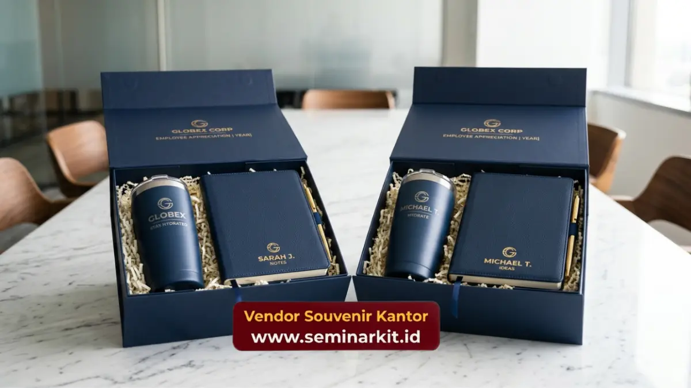

Jenis souvenir employee appreciation yang paling diminati perusahaan mencakup drinkware custom, alat tulis premium, hampers eksklusif, dan produk wellness.
Setiap jenis memiliki karakteristik dan fungsi berbeda yang dapat disesuaikan dengan profil serta kebutuhan karyawan penerima.
- Drinkware custom menjadi pilihan paling fleksibel untuk berbagai level karyawan
- Alat tulis premium cocok untuk momen formal seperti kenaikan jabatan
- Hampers eksklusif ideal untuk perayaan akhir tahun atau pencapaian besar
- Produk wellness merepresentasikan kepedulian perusahaan terhadap kesehatan karyawan
- Setiap jenis souvenir dapat dipersonalisasi dengan logo perusahaan
Drinkware Custom sebagai Pilihan Paling Fleksibel
Drinkware custom seperti tumbler custom dan mug premium menjadi jenis souvenir employee appreciation paling fleksibel karena dapat digunakan setiap hari oleh karyawan di berbagai level jabatan. Produk ini juga efektif memperkuat visibilitas logo perusahaan secara konsisten.
Popularitas drinkware custom tidak lepas dari sifatnya yang praktis. Karyawan cenderung menggunakan tumbler atau mug di meja kerja secara rutin.
Sehingga logo perusahaan yang tercetak pada produk turut menjadi pengingat identitas perusahaan setiap hari.
Material yang umum digunakan meliputi stainless steel untuk tumbler dan keramik premium untuk mug, keduanya menawarkan daya tahan yang baik untuk penggunaan jangka panjang.
Dari sisi anggaran, drinkware custom juga tergolong fleksibel karena tersedia dalam berbagai tingkat harga sesuai kualitas material dan teknik cetak logo yang dipilih perusahaan.
Alat Tulis Premium untuk Momen Formal
Alat tulis premium seperti notebook custom dan pulpen berkualitas tinggi cocok dijadikan souvenir employee appreciation untuk momen formal seperti kenaikan jabatan atau penghargaan tahunan karena kesan elegan yang ditampilkan.
Notebook dengan cover kulit sintetis atau kanvas premium, dilengkapi embossing logo perusahaan, memberikan kesan profesional yang sesuai untuk diberikan kepada karyawan level manajerial ke atas. Pulpen premium dengan mekanisme berkualitas turut menambah kesan eksklusif pada paket souvenir.
Selain fungsinya sebagai alat kerja, produk kategori ini juga sering digunakan karyawan dalam pertemuan formal, sehingga branding perusahaan turut terbawa dalam berbagai kesempatan profesional.
Kombinasi Alat Tulis dalam Satu Paket
Beberapa perusahaan memilih mengombinasikan beberapa alat tulis dalam satu paket, seperti notebook, pulpen, dan pouch penyimpanan, untuk menciptakan kesan souvenir yang lebih lengkap dan berkesan bagi penerima.
Hampers Eksklusif untuk Perayaan Besar
Hampers eksklusif berisi kombinasi produk premium menjadi jenis souvenir employee appreciation yang ideal untuk perayaan besar seperti akhir tahun, ulang tahun perusahaan, atau pencapaian target tahunan tim.
Isi hampers biasanya terdiri dari kombinasi makanan ringan premium, merchandise custom, dan kartu ucapan personal. Kemasan yang digunakan umumnya lebih mewah dibandingkan souvenir reguler, mencerminkan skala perayaan yang sedang berlangsung.
Hampers juga memberikan fleksibilitas bagi perusahaan untuk menyesuaikan isi paket dengan tema perayaan tertentu, misalnya nuansa akhir tahun atau tema pencapaian target khusus.

Produk Wellness sebagai Bentuk Kepedulian
Produk wellness seperti aromaterapi mini, paket self-care, atau alat olahraga ringan menjadi jenis souvenir employee appreciation yang semakin diminati karena mencerminkan perhatian perusahaan terhadap kesejahteraan karyawan secara holistik.
Tren ini berkembang seiring meningkatnya kesadaran perusahaan bahwa kesejahteraan karyawan tidak hanya berkaitan dengan aspek finansial, tetapi juga kesehatan fisik dan mental.
Souvenir bertema wellness memberikan pesan bahwa perusahaan peduli terhadap keseimbangan hidup karyawan di luar pekerjaan.
Menyesuaikan Jenis Souvenir dengan Profil Karyawan
Menyesuaikan jenis souvenir employee appreciation dengan profil karyawan, seperti level jabatan, usia, dan preferensi gaya hidup, membantu memastikan souvenir yang diberikan benar-benar relevan dan dihargai penerima.
Beberapa pertimbangan yang dapat digunakan perusahaan dalam menentukan jenis souvenir meliputi:
- Level jabatan karyawan, di mana posisi manajerial umumnya lebih cocok dengan produk formal
- Usia dan generasi karyawan yang memengaruhi preferensi gaya produk
- Jenis pekerjaan, apakah dominan di kantor atau lapangan
- Skala momen apresiasi, apakah individu atau perayaan tim
Jenis souvenir employee appreciation yang tepat perlu disesuaikan dengan momen, profil karyawan, dan anggaran perusahaan agar dampak apresiasi dapat dirasakan secara maksimal.
Drinkware custom, alat tulis premium, hampers eksklusif, dan produk wellness masing-masing menawarkan keunggulan tersendiri sesuai konteks pemberiannya.
Untuk mendapatkan berbagai pilihan jenis souvenir employee appreciation dengan kualitas terjamin dan opsi custom logo, kunjungi vendorsouvenirkantor.web.id dan diskusikan kebutuhan perusahaan Anda bersama tim kami.

Banner promosi: klik gambar untuk langsung terhubung ke WhatsApp tim sales.